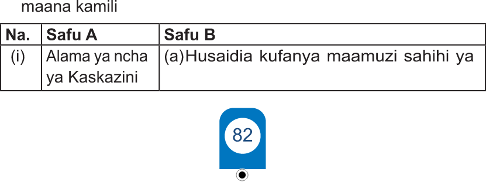

B. Maswali ya kuoanisha
6. Oanisha maneno yaliyopo katika safu A na yale ya safu B kupata maana kamili
| Na. | Safu A | Safu B |
| (i) | Alama ya ncha ya Kaskazini | (a)Husaidia kufanya maamuzi sahihi ya usimamizi wa rasilimali za nchi. |
Alama ya ncha ya Kaskazini

JIOGRAFIA NA MAZINGIRA DARASA LA 4.indd 8212/09/2025 16:34